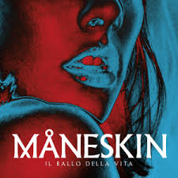

Chosen
O primeiro EP lançado pela banda, em 8 de dezembro de 2017. O disco é composto principalmente
por
covers, com exceção dos sons autorais Chosen e Recovery. Entre os covers,
destaca-se a faixa Beggin, a mais ouvida da banda, com mais de 1.5 bilhões de
visualizações no Spotify.

Il Ballo della Vita
É o primeiro álbum de estúdio da banda, lançado em 26 de outubro de 2018. Contém um total
de 12 faixas, entre as quais Morirò da re, Torna a Casa e L'altra
dimensione.

Teatro d'Ira: Vol. I
Segundo álbum de estúdio da banda,lançado em 19 de março de 2021. Composto por 8 faixas, entre
elas
Zitti e Buoni que os rendeu o 1° lugar no festival Eurovision Song
Contest em 2017 e
I wanna be your slave, sua segunda música mais popular, com mais de 1 bilhão
de
visualizações no Spotify.

Rush!
Terceiro e mais recente álbum da banda, lançado em 20 de janeiro de 2023. O disco
é
formado por
17 faixas, 22 em sua reedição intitulada Rush! ( Are u Coming?), sendo, em
contraposição
aos outros álbuns, a maioria delas escritas em inglês. Faixas em destaque são
Gasoline,
The Loneliest e Kool Kids.